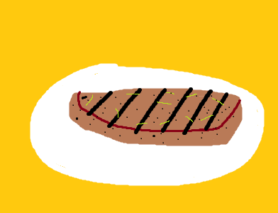

Steak

Description
Runner up to the $2 Asmongold steak. Image includes grill marks for pizzaz.
Ingredients
- 2 lb. NY Strip
- 1/2 tbsp canola oil
- 2 tsp black pepper
- 1.5 tsp salt
- 2 tbsp butter
- 1 glove of minced garlic
- 1 twig of rosemary
- 1 twig of thyme
Steps
- Remove the steak from the fridge and let sit for 20 minutes before cooking.
- Pat the steak dry.
- Season the steak all over with salt and pepper.
- Heat the stainless steel pan on medium low.
- Add oil to pan.
- Add butter to pan.
- Add garlic to pan. Let sautee for 1-2 minutes.
- Gently place steak and let cook for 3 minutes or until it naturally unsticks.
- Do not bast the steak with butter, it doesn't do much if anything.
- Flip the steak over and repeat the last step.
- Add more salt and pepper and the herbs to a chopping board and chop it up. The steak will absorb more flavor here while cooling down.
- (Optional) Use tongs to hold the sides of the steak to the pan for several seconds to sear the sides more.
- Place the steak on the seasoned cutting board.
- (Optional) Cut the steak into strips and mix into the seasoning.
- Let cool for 5-10 minutes (less if sliced).
- Cover loosely, moreso if the air is cold.